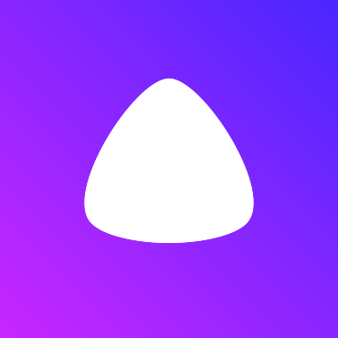
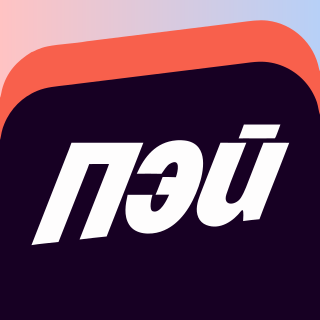

Логотип Яндекс Дом
Скачайте логотип Яндекс Дом в SVG бесплатно. Официальные цвета, готово для Figma.
{kind=link}

Алиса Auto.ru Яндекс Маркет Яндекс Еда
Яндекс Пэй Яндекс Сплит Яндекс Go Яндекс Такси Яндекс Доставка Яндекс Карты Кинопоиск Яндекс МузыкаЧастые вопросы
В каком формате можно скачать логотип Яндекс Дом?
Логотип Яндекс Дом доступен в SVG, ICO, ICNS. Векторный SVG масштабируется без потери качества и подходит для печати и Figma, а ICO и ICNS — готовые иконки для приложений Windows и macOS.
Можно ли скачать логотип Яндекс Дом в формате ICO или ICNS?
Да. Кроме SVG и PNG, логотип Яндекс Дом можно скачать как иконку в форматах ICO (для Windows и ярлыков) и ICNS (для приложений и Dock в macOS) — нажмите «Скачать другие форматы» и выберите нужный.
Логотип Яндекс Дом можно скачать бесплатно?
Да. Скачать логотип Яндекс Дом на Trace Logo's можно бесплатно и без регистрации. Логотип принадлежит правообладателю — используйте его в соответствии с фирменными правилами бренда.
Как изменить цвет логотипа Яндекс Дом?
Откройте логотип Яндекс Дом в каталоге Trace Logo's и воспользуйтесь встроенным редактором цвета: выберите элемент, задайте оттенок в HSV-пикере и экспортируйте готовый SVG.
Какие официальные цвета у логотипа Яндекс Дом?
Основные цвета логотипа Яндекс Дом: #C926FF, #4A26FF, #FFBEF1, #E374FF, #FFCBF7, #EE86FF. Значения извлечены из исходного SVG-файла.